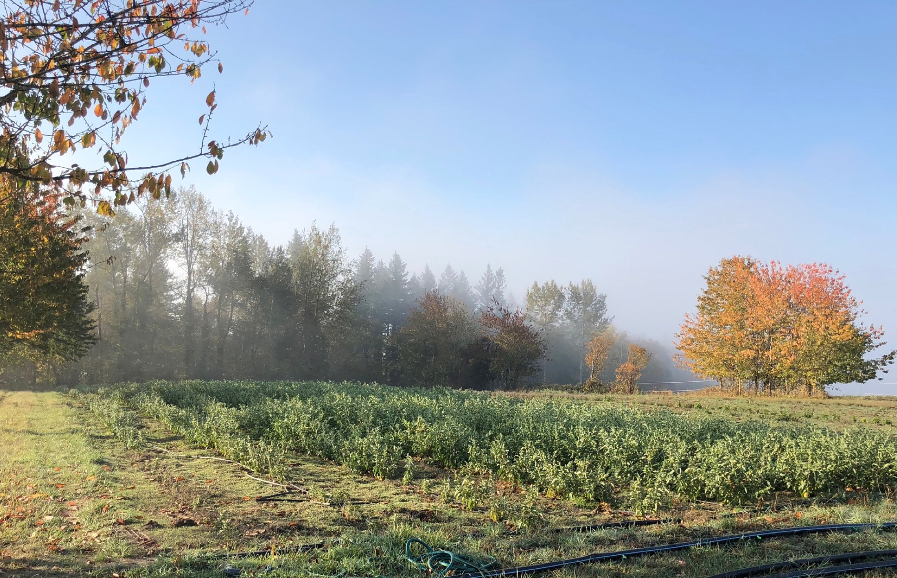
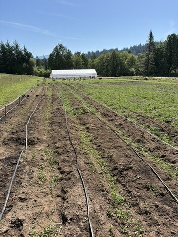
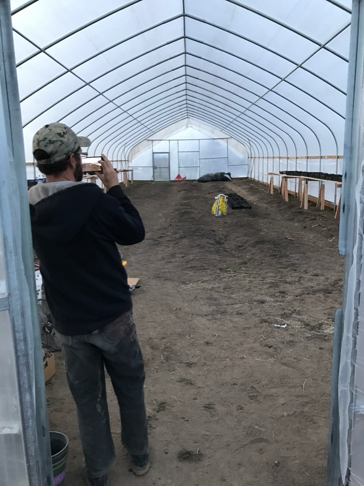
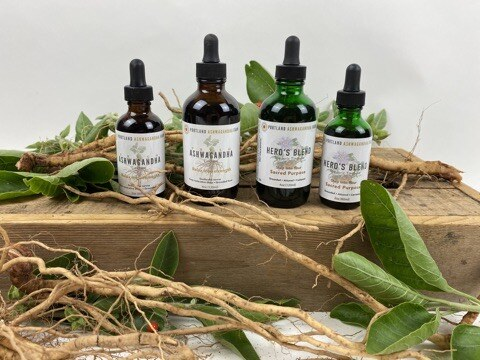
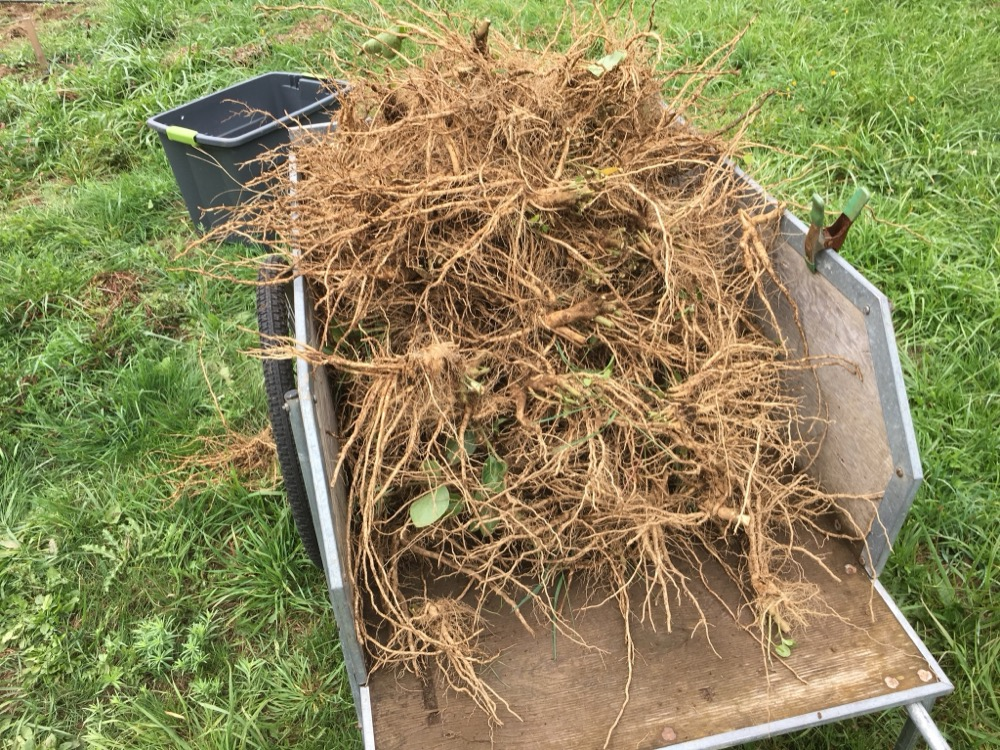

Farm and land operators
Owners, managers, and land-based teams facing infrastructure, irrigation, labor, records, crop planning, market fit, or expansion calls.

Farmer. Technologist. Operator.
I help farms, food and supplement businesses, nonprofits, and financial partners make grounded decisions when land, labor, infrastructure, technology, and money all meet. The best fit is someone who wants a candid operating read before a plan gets expensive.
Portland Ashwagandha Farm founder/operator
Full-time farming since 2012
Technical consultant, 2000-2012
Supplement brand operator, 10+ years
Right fit
Owners, managers, and land-based teams facing infrastructure, irrigation, labor, records, crop planning, market fit, or expansion calls.
Operators who need the farm, inventory, fulfillment, customer promises, compliance pressure, and cash timing to match reality.
Boards, funders, lenders, and program leads who need an operator-informed read on whether a plan can actually be executed.
Generic advice, outsourced responsibility, theoretical strategy, software disconnected from staff, or pitch work that avoids operating truth.
First project
A first engagement should not be vague. The cleanest starting point is a focused diagnostic around one real decision, one operating system, or one investment that needs a grounded read before more time or money gets committed.
Advisory scope
The work is tailored to the decision. Some engagements are hands-on operating reviews. Some are technology and records cleanup. Some are a sanity check before a funder, lender, board, or owner commits to a plan that must survive real field conditions.
Infrastructure, irrigation, crop planning, labor flow, records, market fit, and seasonal rhythm.
Product operations, fulfillment, inventory, claims, customer reality, and the farm-to-brand handoff.
Practical program design, grounded budgets, implementation risk, and systems staff can actually use.
Operator-informed diligence, risk readouts, operating assumptions, and reality checks on growth plans.
Areas of work
A practical review of what is working, what is fragile, and what is creating friction across irrigation, infrastructure, labor flow, inventory, records, crop planning, and season rhythm.
Deliverable: a prioritized findings memo with near-term fixes and longer-term system improvements.
Spreadsheets, iOS or web tools, dashboards, databases, automations, and reporting designed around real staff, real timing, and real adoption.
Deliverable: a working prototype, cleaned-up workflow, or implementation plan that people can actually use.
Operator-informed review for grants, programs, lenders, financial partners, nonprofit initiatives, pricing, product mix, growth plans, and operational claims.
Deliverable: a decision memo, risk readout, or operating plan grounded in farm reality.
Engagement examples
Review irrigation, water pressure, filtration, field layout, equipment choices, and the weak links that could cost a season.
Clean up spreadsheets, records, reporting, databases, dashboards, or internal tools so the operation has one version of the truth.
Map the handoff between farm production, inventory, fulfillment, customer promises, compliance pressure, and cash timing.
Prepare an operator-level memo for owners, boards, funders, lenders, or financial partners evaluating an agricultural plan.
Experience
Grew up around community-cultivated land, with roughly 1.5 acres under cultivation across three adjoining backyards.
Earlier farm seasons that kept the field perspective alive during the beginning of a long technical career.
Full-time technical consulting across software systems, infrastructure, and design, including work at Intel and an independent consulting practice.
Consulting with regional companies where success depended on adoption, communication, and good judgment under constraints.
Current farming chapter, including irrigation built from scratch, scrappy infrastructure, seasons, markets, weather, people, tools, and cash timing.
Full-time farm operation, with the daily accountability that comes from needing land, labor, water, products, records, and sales to work together.
Founder, owner, and operator of Portland Ashwagandha Farm, with ties into biodynamic, Portland-area, nonprofit, and food-system communities.
More than 10 years owning and operating a dietary supplement brand, including products, customers, fulfillment, records, and practical constraints.
Project-management and financial services context, plus fluency with automation, software tools, and the current technical landscape.
Proof of range

Field executionMultiple irrigation systems from scratch, with the sourcing, repair, improvisation, and operational judgment that come from needing water, pressure, filtration, and timing to work in the real world.

Software fluencyExperience programming iOS and web-based systems, plus databases and automation, means the advice can become usable tools instead of another unused recommendation.

Brand and systemsMore than 10 years owning and operating a dietary supplement brand means the advice includes products, customers, fulfillment, records, compliance pressure, and the everyday friction of selling what you grow.

Operating disciplineFinancial services project work gives me a practical feel for accountability, reporting, priorities, deadlines, diligence, and the gap between a plan and execution.
Founder story
I am the founder, owner, and operator of Portland Ashwagandha Farm, in operation since 2015. My farming background started early: I grew up around roughly 1.5 cultivated acres across three adjoining backyards tended by our community, farmed again in 2000 and 2001, began this current farming chapter in 2009, and have farmed full time since 2012.
Alongside that field experience, I worked full time as a technical consultant from 2000 to 2012, including work at Intel, my own technical consulting firm, and consulting across Portland-area companies on software systems, technical infrastructure, and design.
I moved into farming to build a more grounded, balanced, outdoor life, then spent more than a decade operating a farm and dietary supplement brand in the real weather of production, sales, systems, cash flow, and community. Now I am merging those strengths into a consulting practice for complex real-world operations: land, water, crops, labor, technology, finance, community, and execution.
Approach
We start with the real question: what decision, workflow, investment, system, or operating problem needs a clearer answer?
I review the records, workflow, people, tools, margins, infrastructure, constraints, and incentives that shape what is actually possible.
The outcome is a clear readout, prioritized next steps, and, when useful, a prototype, tool, model, or operating plan that can survive contact with the season.
Contact
Send a short note with what you operate, the decision in front of you, why now, and what would make the engagement useful. The strongest first inquiries include a map, photo, record, report, or plain-language description of the system that is not working yet.
I am currently taking a small number of right-fit introductory advisory projects at practical rates while I build this practice deliberately.
Jeff@comfrey.net
Email Jeff about a first call